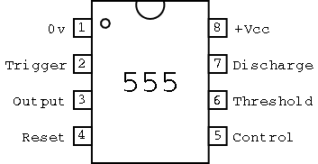

Sample diagrams

General
http://pcbheaven.com/wikipages/555_Theory/
Change a 555 into a flipflop
http://www.kpsec.freeuk.com/555timer.htm#bistable
PWM with a 555
http://www.dprg.org/tutorials/2005-11a/index.html
http://www.instructables.com/id/Yet-Another-Simple-Pot-controlled-555-PWM-generato/step2/What-will-be-needed/
Variable frequency with 555
http://www.toniwestbrook.com/archives/127
Variable pulse duration
http://home.cogeco.ca/~rpaisley4/LM555.html
(and basically 1000 other super circuits with 555!!!)
Inverter
Convert DC to AC...
Schema with 555 and 2 transistor
http://project.irone.org/dc-to-ac-inverter.html
Same same but different
http://www.sentex.ca/~mec1995/circ/555dcac.html
Breathing (The Apple popularized)
http://www.pcbheaven.com/userpages/Flexible_555_LED_Pulsing_Circuit/
On/Off switch
With 1 button
http://electronics-lab.com/projects/misc/012/index.html
http://www.bowdenshobbycircuits.info/page9.htm#555-T.gif
With 2 buttons
http://www.bareconductive.com/555-touch-circuit
{kind=link}